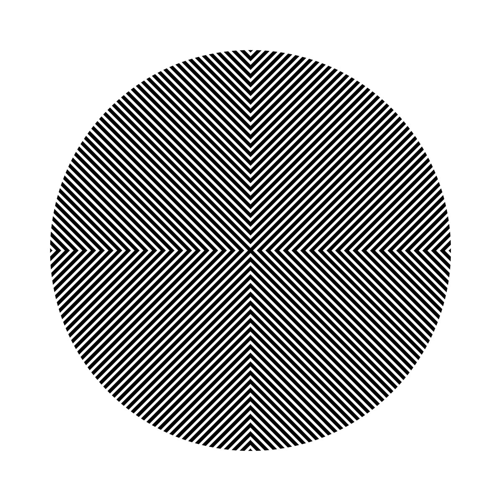
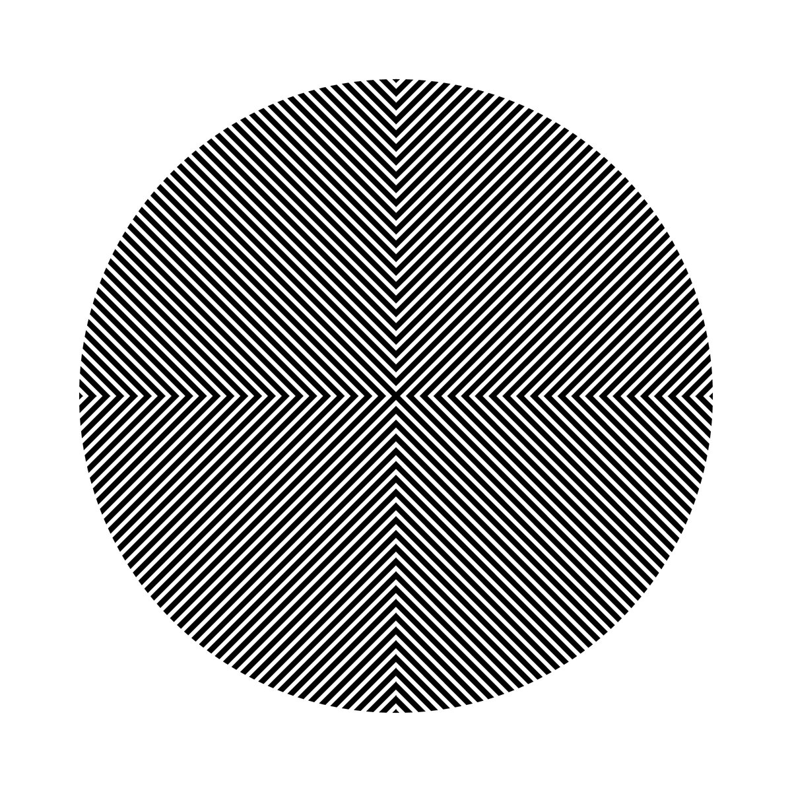

I am an artist working with sound.
I run the label
and am part of the label
I am half of Gottlieb-McEvoy Ф  I present the show
on Dublin Digital Radio Ф
Find me on twitter and discogs Ф
mail me / book a live show: tuuunuuut [at] gmail [dot] com
I present the show
on Dublin Digital Radio Ф
Find me on twitter and discogs Ф
mail me / book a live show: tuuunuuut [at] gmail [dot] com
 "Ultra clear, high register probes from a playful tuuun - sounds like a flock of nanobot birds nesting in your cochlea, where they oscillate between intense squabble and having a right old knees-up on some DIY software.
“tuuun touches down on Conditional with a 14-tracker of barebone patterns and clashing frequencies, aptly titled FMTRAX after the frequency modulation synthesis the FLUF label boss used to create these mini-maximal, ascetic sounds. Beyond all that, though, it's serious FUN.
tuuun says: "I made these fourteen disembodied FM sequences using the PreenFM2 open-source DIY synthesizer, over the course of two days in Stockholm in 2017. It's a really nice little unit that I like the sound of, and it also takes scala files, so I was experimenting with trying out lots of differently-tuned scales and seeing how they sounded."
FMTRAX are rough and ready compositions, fizzing with stray overtones and breakneck arpeggiations. An unruly listen for all fans of fucked frequency fun." via Boomkat
Twenty Ongoing Tones (MEDS, 2018) Ф
"Ultra clear, high register probes from a playful tuuun - sounds like a flock of nanobot birds nesting in your cochlea, where they oscillate between intense squabble and having a right old knees-up on some DIY software.
“tuuun touches down on Conditional with a 14-tracker of barebone patterns and clashing frequencies, aptly titled FMTRAX after the frequency modulation synthesis the FLUF label boss used to create these mini-maximal, ascetic sounds. Beyond all that, though, it's serious FUN.
tuuun says: "I made these fourteen disembodied FM sequences using the PreenFM2 open-source DIY synthesizer, over the course of two days in Stockholm in 2017. It's a really nice little unit that I like the sound of, and it also takes scala files, so I was experimenting with trying out lots of differently-tuned scales and seeing how they sounded."
FMTRAX are rough and ready compositions, fizzing with stray overtones and breakneck arpeggiations. An unruly listen for all fans of fucked frequency fun." via Boomkat
Twenty Ongoing Tones (MEDS, 2018) Ф  "THIS RELEASE FROM TUUUN IS A SEQUENCE OF RESYNTHESIZED TINNITUS SOUNDS.
IT WAS MADE FROM THE CONTRIBUTIONS OF TWENTY VOLUNTEERS WHO DESCRIBED THEIR TINNITUS IN DETAIL. THE RESULTS OF THIS RECREATION ARE PRESENTED AS A SEQUENCE OF TONES, EACH A BRIEF WINDOW INTO THE INTERNAL SOUND WORLD OF ANOTHER PERSON.
THIS PIECE IS AN INTENSE EXPLORATION OF PHYSICALITY, AS IT DESCRIBES SOUNDS THAT ARE PRODUCED AS A RESULT OF AUDITORY TRAUMA, MAY BE UNCOMFORTABLE TO LISTEN TO, OR BE BEYOND OUR OWN PERSONAL ABILITY TO HEAR OR EXPERIENCE. BY TURNING UP THE VOLUME ON THESE SONIC ARTEFACTS, THEY MAY BE RE-EVALUATED AS WORTHY SOUNDS IN THEIR OWN RIGHT."
CODE011 (CO-DEPENDENT, 2017) Ф CODE011 is a collection of recordings, based on the idea of "extended techniques for impossible instruments". They were made using a physical-modelling synthesis, and revel in their ability to firstly tread a path of plausability before veering wildly into the unknown.
AA0005 (FLUF, 2017) Ф
"THIS RELEASE FROM TUUUN IS A SEQUENCE OF RESYNTHESIZED TINNITUS SOUNDS.
IT WAS MADE FROM THE CONTRIBUTIONS OF TWENTY VOLUNTEERS WHO DESCRIBED THEIR TINNITUS IN DETAIL. THE RESULTS OF THIS RECREATION ARE PRESENTED AS A SEQUENCE OF TONES, EACH A BRIEF WINDOW INTO THE INTERNAL SOUND WORLD OF ANOTHER PERSON.
THIS PIECE IS AN INTENSE EXPLORATION OF PHYSICALITY, AS IT DESCRIBES SOUNDS THAT ARE PRODUCED AS A RESULT OF AUDITORY TRAUMA, MAY BE UNCOMFORTABLE TO LISTEN TO, OR BE BEYOND OUR OWN PERSONAL ABILITY TO HEAR OR EXPERIENCE. BY TURNING UP THE VOLUME ON THESE SONIC ARTEFACTS, THEY MAY BE RE-EVALUATED AS WORTHY SOUNDS IN THEIR OWN RIGHT."
CODE011 (CO-DEPENDENT, 2017) Ф CODE011 is a collection of recordings, based on the idea of "extended techniques for impossible instruments". They were made using a physical-modelling synthesis, and revel in their ability to firstly tread a path of plausability before veering wildly into the unknown.
AA0005 (FLUF, 2017) Ф  "Nutty avant-techno tackle from tuuun, head honcho of Malmö Sweden’s vitally upfront FLUF label.
On AA0005 he seemingly takes cues from Mark Fell and EVOL to entwine crisp, boomy 808 drum patterns with writhing acid modulations in unyielding
form on 0005A in a way liable to drive dances to the brink, before allowing for some swing in his ting with the ruggeder, clipped torque of 0005AA
recalling a funky adjunct to Dale Cornish’s icier rhythmic reductions or a more banging echo of Ilpo Vaisanen’s Kangaroo releases" via Boomkat
AANCIENT v7437 (Aancient Vvars, 2017) Ф AANCIENT v7437 is a group of Slow Acid Improvisations made using only the Korg Monotribe.
AA0001 (FLUF, 2017) Ф "Simple repetitive parts made from crisp and deep 808 drum sounds combine into a more complex rhythm. Against these drums an irregular but persistent pitched percussion is foregrounded, with some randomized hiss and an occasional acid squelch."
via Aesthetic Complexity / Guy Birkin.
åån(IEnt 77ARΩ (Aancient Vvars, 2017) Ф
"Nutty avant-techno tackle from tuuun, head honcho of Malmö Sweden’s vitally upfront FLUF label.
On AA0005 he seemingly takes cues from Mark Fell and EVOL to entwine crisp, boomy 808 drum patterns with writhing acid modulations in unyielding
form on 0005A in a way liable to drive dances to the brink, before allowing for some swing in his ting with the ruggeder, clipped torque of 0005AA
recalling a funky adjunct to Dale Cornish’s icier rhythmic reductions or a more banging echo of Ilpo Vaisanen’s Kangaroo releases" via Boomkat
AANCIENT v7437 (Aancient Vvars, 2017) Ф AANCIENT v7437 is a group of Slow Acid Improvisations made using only the Korg Monotribe.
AA0001 (FLUF, 2017) Ф "Simple repetitive parts made from crisp and deep 808 drum sounds combine into a more complex rhythm. Against these drums an irregular but persistent pitched percussion is foregrounded, with some randomized hiss and an occasional acid squelch."
via Aesthetic Complexity / Guy Birkin.
åån(IEnt 77ARΩ (Aancient Vvars, 2017) Ф  Two improvised recordings made on the Serge syntheizer in Studio 6 of EMS elektronmusikstudion Stockholm.
MIMESIS (FLUF, 2016) Ф MIMESIS is an excavation: the quiet removal of blankets of desert and swamp to expose a skeletal being underneath who slowly stirs and opens their mouth, speaking a language we all recognise but with words arcane and unknowable. It digs its snout into the earth.
FINESTEXPORT (FLUF, 2016) Ф
Two improvised recordings made on the Serge syntheizer in Studio 6 of EMS elektronmusikstudion Stockholm.
MIMESIS (FLUF, 2016) Ф MIMESIS is an excavation: the quiet removal of blankets of desert and swamp to expose a skeletal being underneath who slowly stirs and opens their mouth, speaking a language we all recognise but with words arcane and unknowable. It digs its snout into the earth.
FINESTEXPORT (FLUF, 2016) Ф  FINESTEXPORT is the sound of instruments and ideas being pushed into their discomfort zones. Plucked strings and struck mallets are contorted into impossible shapes and forged into molten electronic liquid. Rubber bands tighten to the point of snapping, and particles dance in Brownian Motion.
FINESTEXPORT is the sound of instruments and ideas being pushed into their discomfort zones. Plucked strings and struck mallets are contorted into impossible shapes and forged into molten electronic liquid. Rubber bands tighten to the point of snapping, and particles dance in Brownian Motion.
Appearances: For ґhe Bees Really (New York Haunted, 2018) Ф Public Entities (Value Exchange, 2018) Ф Fuck You And Your Influential Friends (New York Haunted, 2018) Ф Misapplications (Conditional, 2017) Ф
I have been @: Inter Arts Center Malmö, January/February 2018 Ф EMS elektronmusikstudion Stockholm 2017 Ф New Music Incubator Konstancin / Brussels, 2017/2018 Ф
Free music resources for you: 96 Buchla Kicks Ф 64 Serge Rimshots Ф UI Sound Pack Ф 297 Vermona DRM1 Mk3 Claps Ф Volca Beats Samples Ф VOSIM Single Cycle Waves Ф